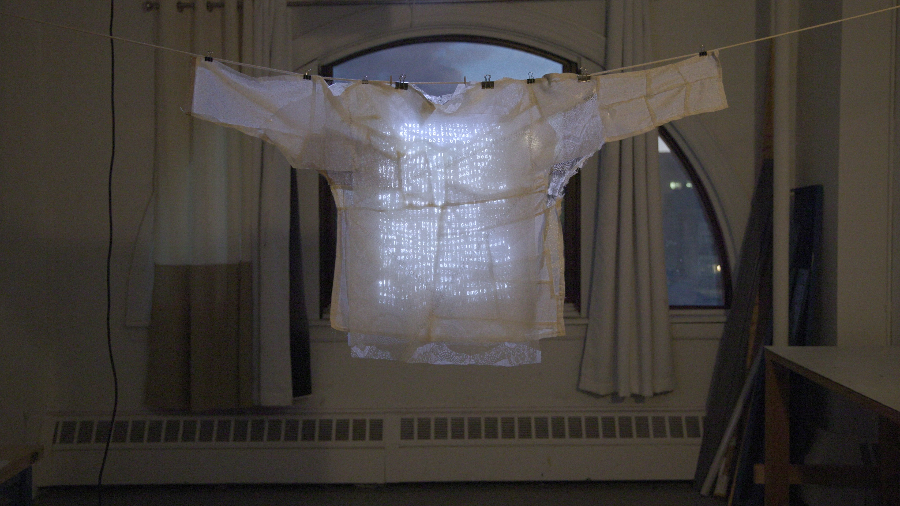
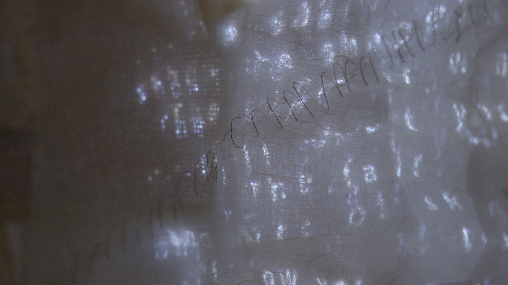
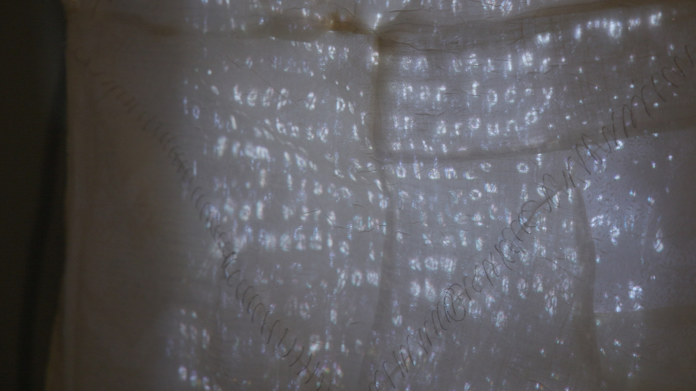
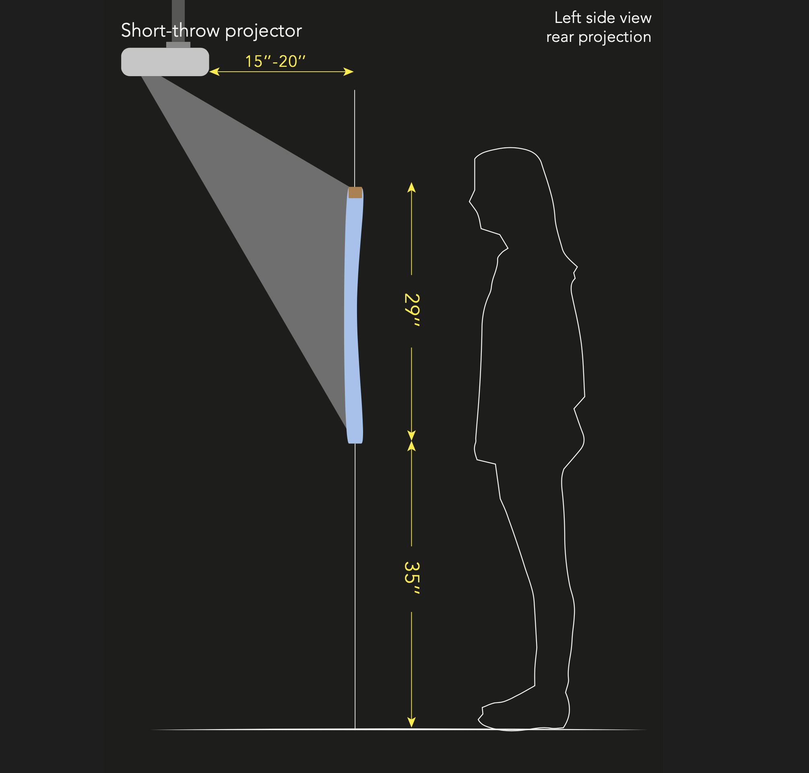
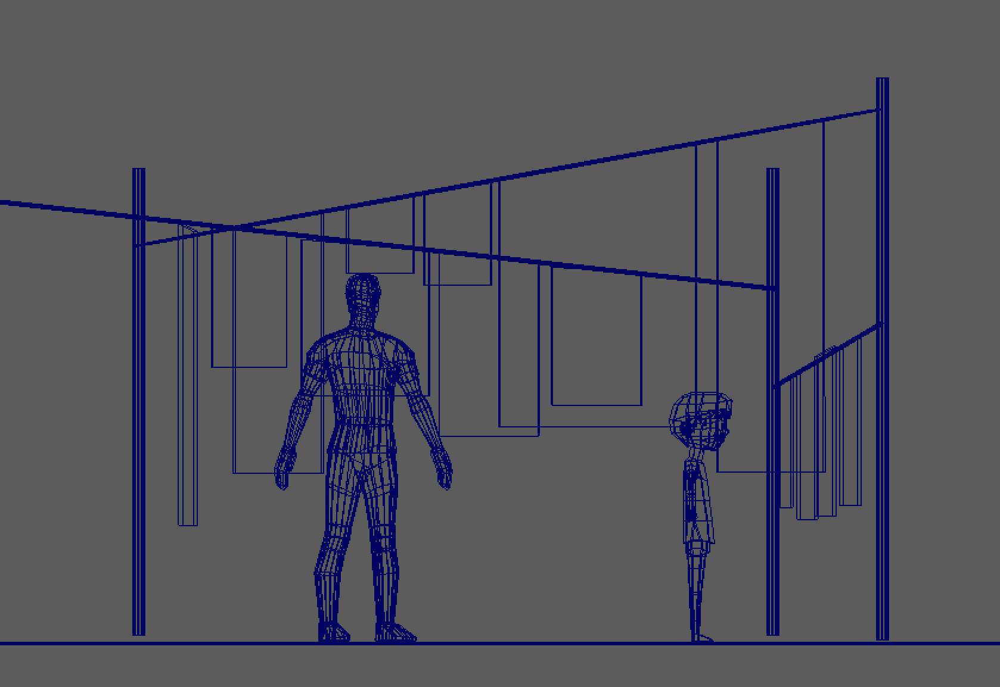
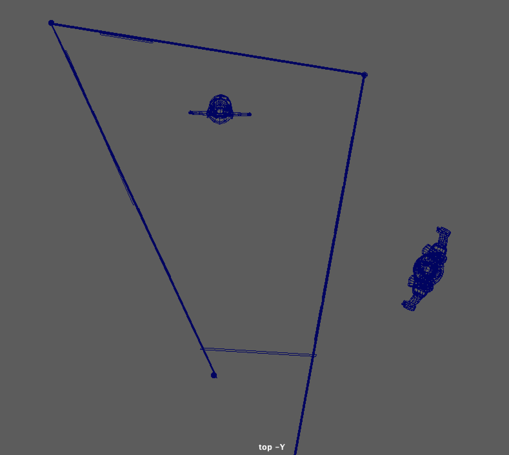
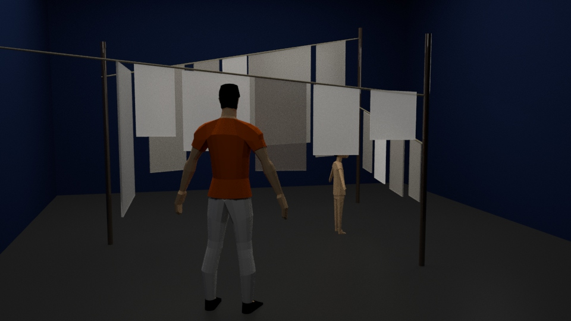

Cloth on Cloth(es) is an interactive e-textile
piece incorporating projection onto a linen garment. Fabric scraps gathered from second-hand clothes,
mended and stitched with pieces of conductive cloth by conductive threads, become tactile interfaces
where audiences can interact with a visual prose poem projected on it. The prose, narrating the
emotional undertones linked to repair-work, visually emulates the movements of a piece of fabric as the
projected words sway, are folded or torn, all in response to the viewer's touch. Driven by custom
software, the words form a kind of “digital fabric”.

As a pre-capitalist craft, repairing old clothes connotes love and care from the person who mends
them--usually a mom, a wife, or an elder sister--to the one who wears them. Throughout history, textiles
have shared comparable silent roles as women; yet, women's emotions are stitched into patchworks,
portraying textiles as a medium for memories.
Textiles woven or stitched with conductive materials become smart objects that pass electronic signals
while retaining their softness, elasticity, and other tactile qualities as fabrics. In Cloth on
Cloth(es), a piece of digital cloth augmenting layers of mended linen fabrics questions the dichotomy of
"high" and "low" technology, as well as values ingratiating the 'newest-is-best' that prevail in today's
society. This project presents the interplay of a piece of poem and a piece of fabric, the juxtaposition
of medium and the duality of narratives.


Behind the Scenes
Drafts & Sketches

Exhibition Plan


